Healthy Life Style Tips
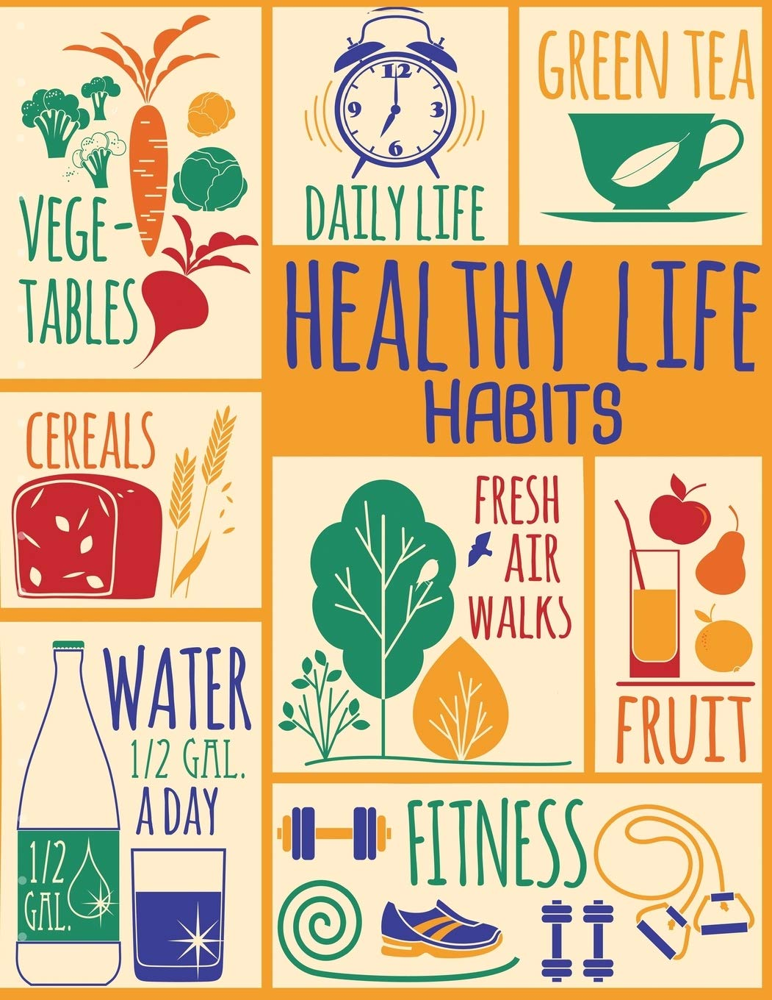
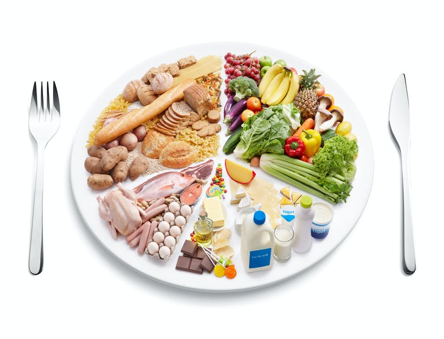
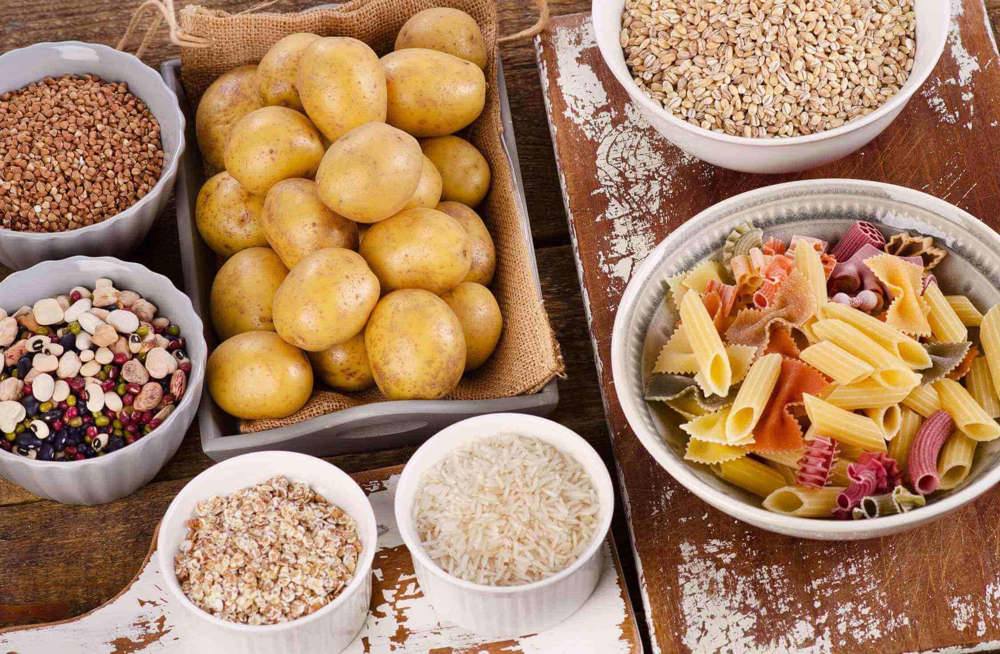
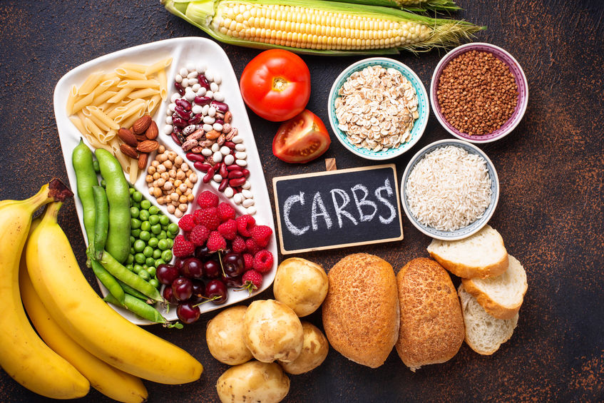
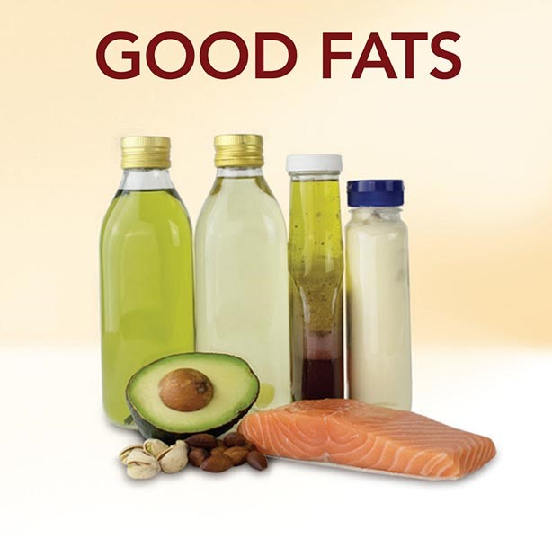
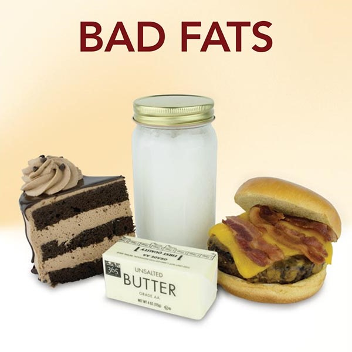
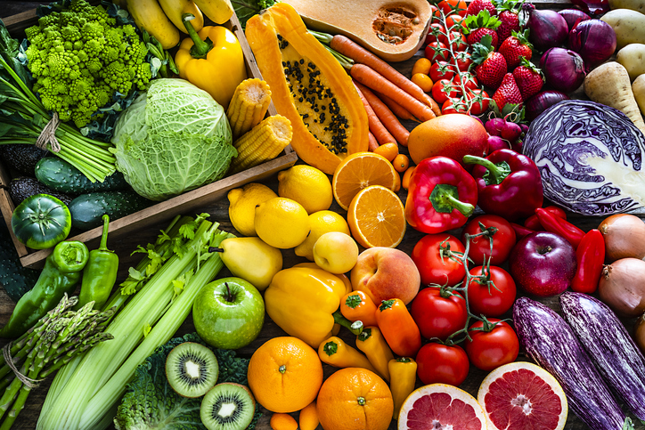

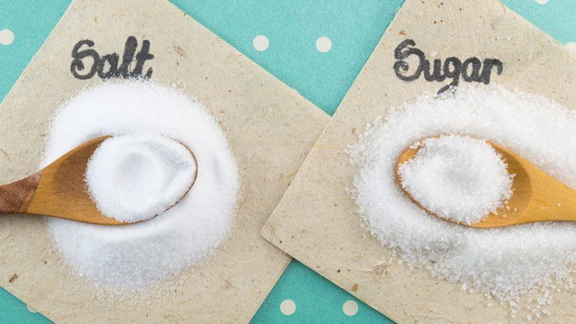
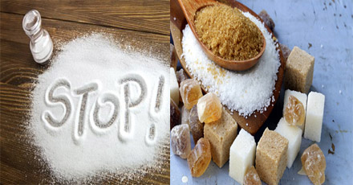
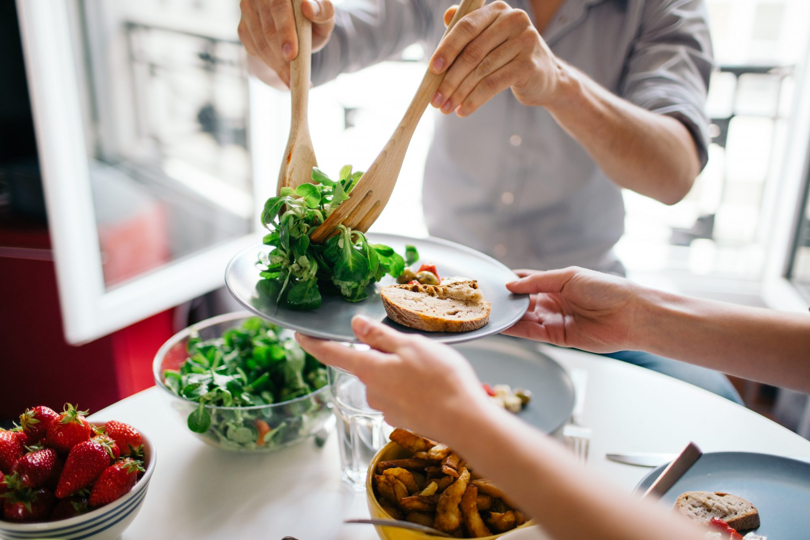
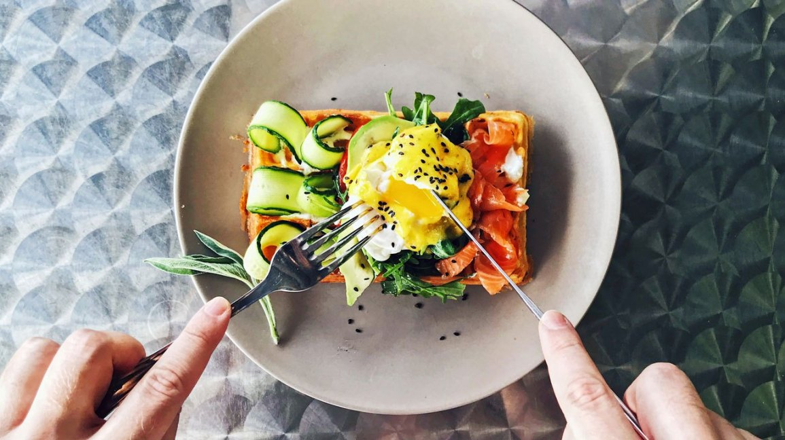
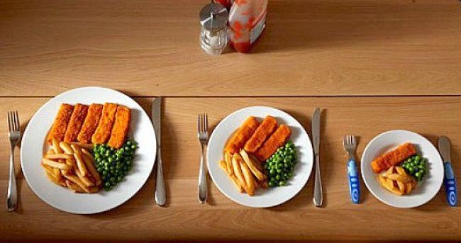
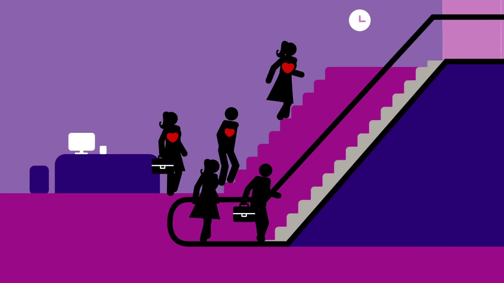
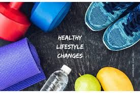
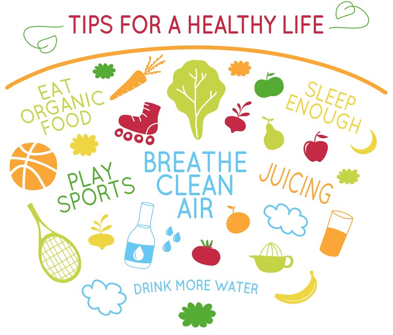
Everyone benefits from leading a safe lifestyle. When we take care of our physical wellbeing, we feel healthier as well – fitter, more comfortable, and more capable of dealing with challenges. When you have a psychiatric disorder, this is particularly necessary.
What you gain by living more healthily includes: feeling better mentally – regular exercise can lift your mood and help you feel better1, saving money – eating junk food, smoking, and drinking sugary drinks or alcohol are all expensive habits2, fewer health problems – living a healthier lifestyle means a lower risk of developing many illnesses3, taking control of your life – getting healthy helps you feel in control of your life4.
10 Healthy Lifestyle Tips
- Eat a variety of foods
- Base your diet on plenty of foods rich in carbohydrates
- Replace saturated with unsaturated fat
- Enjoy plenty of fruits and vegetables
- Reduce salt and sugar intake
- Eat regularly, control the portion size
- Drink plenty of fluids
- Maintain a healthy body weight
- Get on the move, make it a habit!
- Start now! And keep changing gradually
- Eat a variety of foods
- A high-fat lunch could be followed by a low-fat dinner.
- Base your diet on plenty of foods rich in carbohydrates
- Replace saturated with unsaturated fat
- Enjoy plenty of fruits and vegetables
- Reduce salt and sugar intake
- We could choose products with lower sodium content
- Salt as substitute spices, increasing the variety of flavours
- Eat regularly, control the portion size
- Right amount makes it easier to not overeat
- Smaller plates helps with smaller servings
- Packaged foods, with calorie values on the pack
- If eating out, we could share a portion with a friend
- Drink plenty of fluids
- Maintain a healthy body weight
- Get on the move, make it a habit!
- Use the stairs instead of the elevator
- Go for a walk during lunch breaks
- Make time for a family weekend activity
- Start now! And keep changing gradually
For good health, we need more than 40 different nutrients, and no single food can supply them all. It is not about a single meal, it is about a balanced food choice over time that will make a difference!
See Lists
Carbohydrate-rich ingredients, such as cereals, corn, pasta, potatoes, and toast, can account for around half of the calories in our diet. At least one of these should be served at each meal. Whole grain grains, such as wholegrain bread, noodles, and cereals, help us get more fiber. See Lists
Fats are important for good health and proper body function. Too much of it, on the other hand, will have a negative impact on our weight and cardiovascular health. Different types of fats have various health effects, and some of these suggestions can help us maintain the proper balance:
We should limit the consumption of total and saturated fats (often coming from foods of animal origin), and completely avoid trans fats; reading the labels helps to identify the sources.
Fish 2-3 days a week, with at least one helping of fatty fish, will help us get the right amount of unsaturated fats in our diet. Instead of frying, we can boil, steam, or bake our food, excluding the fatty portion of the meat and using vegetable oils. See Lists
Fruits and vegetables are among the most essential foods for supplying them with adequate amounts of vitamins, minerals, and fiber. At least 5 servings a day should be our goal. For example, a glass of fresh fruit juice for tea, an apple and a slice of watermelon as snacks, and a variety of vegetables at each meal. See Lists
High salt consumption can raise blood pressure and raise the risk of cardiovascular disease. Salt can be reduced in the diet in a variety of ways:
Sugar provides sweetness and an attractive taste, but sugary foods and drinks are rich in energy, and are best enjoyed in moderation, as an occasional treat. We could use fruits instead, even to sweeten our foods and drinks. See Lists
Eating a variety of foods, regularly, and in the right amounts is the best formula for a healthy diet.
Skipping meals, especially breakfast, may lead to uncontrollable hunger and helpless overeating. Snacking in between meals will assist with appetite reduction, but it can not be used to supplement proper meals. We might eat yoghurt, a handful of fresh or dried fruits or vegetables (such as carrot sticks), unsalted almonds, or bread with cheese as snacks.
See Lists
Adults to consume at least 1.5 litres of water every day! Or maybe more if it's really hot outside or they're physically involved. Water is, of course, the safest source; we can use tap or mineral water, sparkling or non-sparkling, pure or flavorful. Fruit fruits, soda, soft drinks, yogurt, and other beverages are all acceptable - on occasion. See Lists
Gender, height, age, and genetics all play a role in determining our ideal weight. Obesity and overweight people are at a higher risk for a variety of illnesses, including diabetes, heart disease, and cancer.
Excess body fat is the result of consuming more than we require. Extra calories can be obtained from any caloric nutrient, including protein, fat, starch, and alcohol, but fat is the most concentrated form of energy. Physical exercise allows one to expend stress while still making us feel nice. The message is straightforward: if we are gaining weight, we must eat less and exercise more!
See Lists
Physical exercise is beneficial to individuals of all sizes and health conditions. It aids in the burning of excess calories, is beneficial to the heart and circulatory system, protects or raises muscle mass, aids in concentration, and promotes physical health and well-being. We don't have to be Athlete champions to get moving! We all could:
Significant lifestyle changes adopted all at once are more difficult to sustain than gradual changes. For three days, we will keep track of what we ate and drank during the day, as well as how much exercise we got in. See Lists